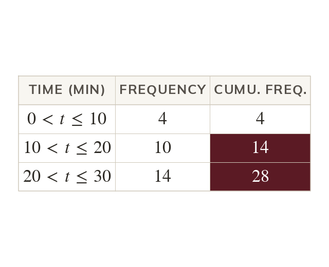
A running total
Cumulative frequency adds each frequency to all the ones before it. So the column never goes down.
A cumulative frequency table says at once how many people took minutes or less. It is the step before the graph that estimates the median and the quartiles.
Work down the page at your own pace. Write every answer in your book first, then click to check it.
Read each card, then follow the worked examples one step at a time.

Cumulative frequency adds each frequency to all the ones before it. So the column never goes down.
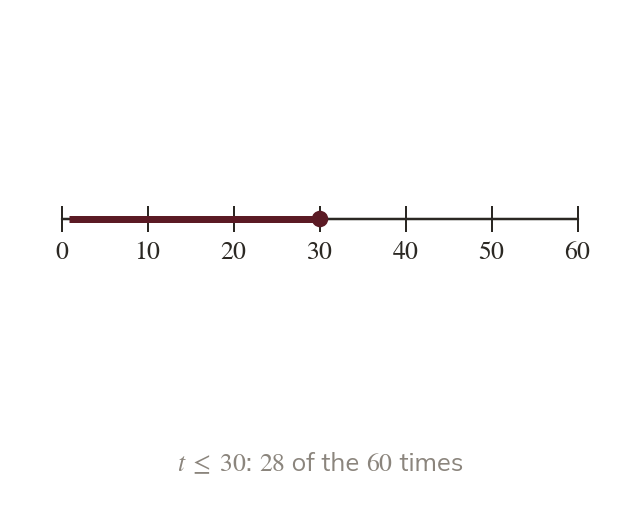
Each cumulative frequency counts the values up to its class's upper boundary. So people took minutes or less.
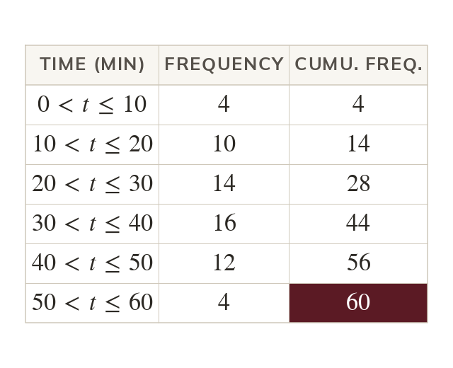
The last cumulative frequency equals the total frequency. It checks the running total.
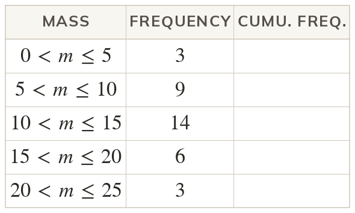
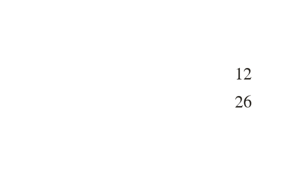
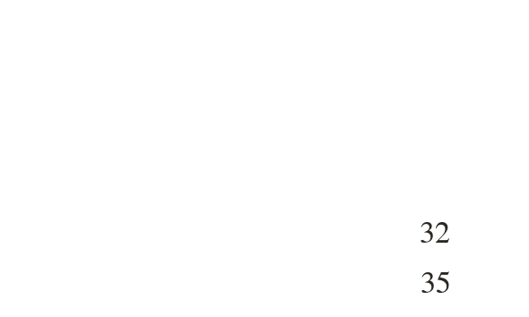
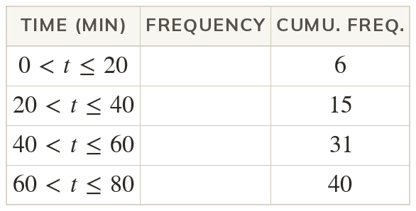
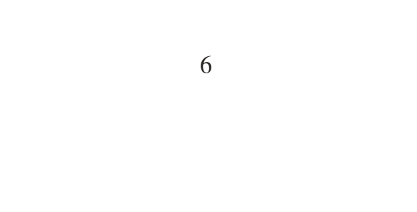
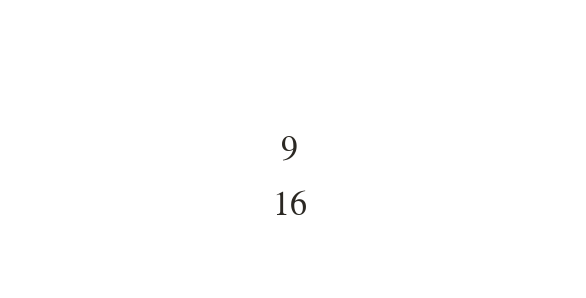
Pick an answer. If it's wrong, the feedback tells you which mistake it was.
Read each card, then follow the worked examples one step at a time.
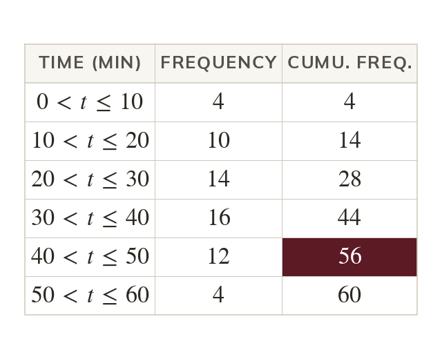
The number of values up to a boundary is read straight from the table. So people took minutes or less.
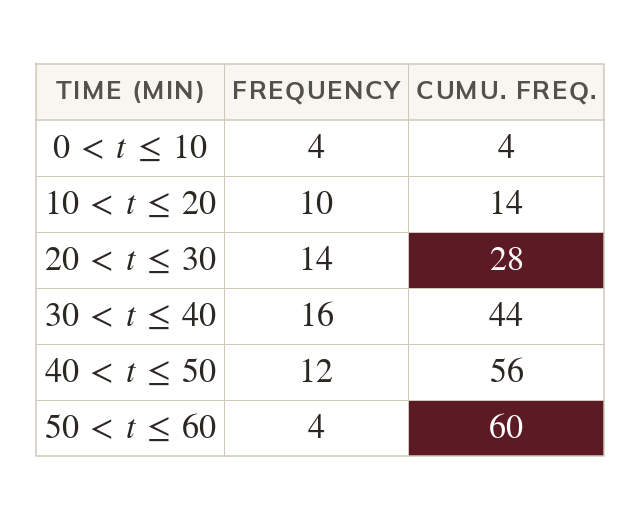
The number more than a boundary is the total minus its cumulative frequency. So took over minutes.
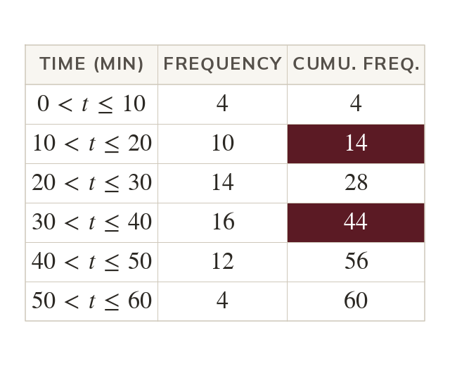
The number between two boundaries is the difference of their cumulative frequencies. Between and minutes,
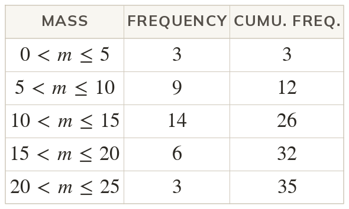
Pick an answer. If it's wrong, the feedback tells you which mistake it was.
Finished? Next lesson: 10H.16.4 Drawing a Cumulative Frequency Graph.
Log in, then search for a code to practise that skill.
Videos, worksheets and more on each part of this lesson.